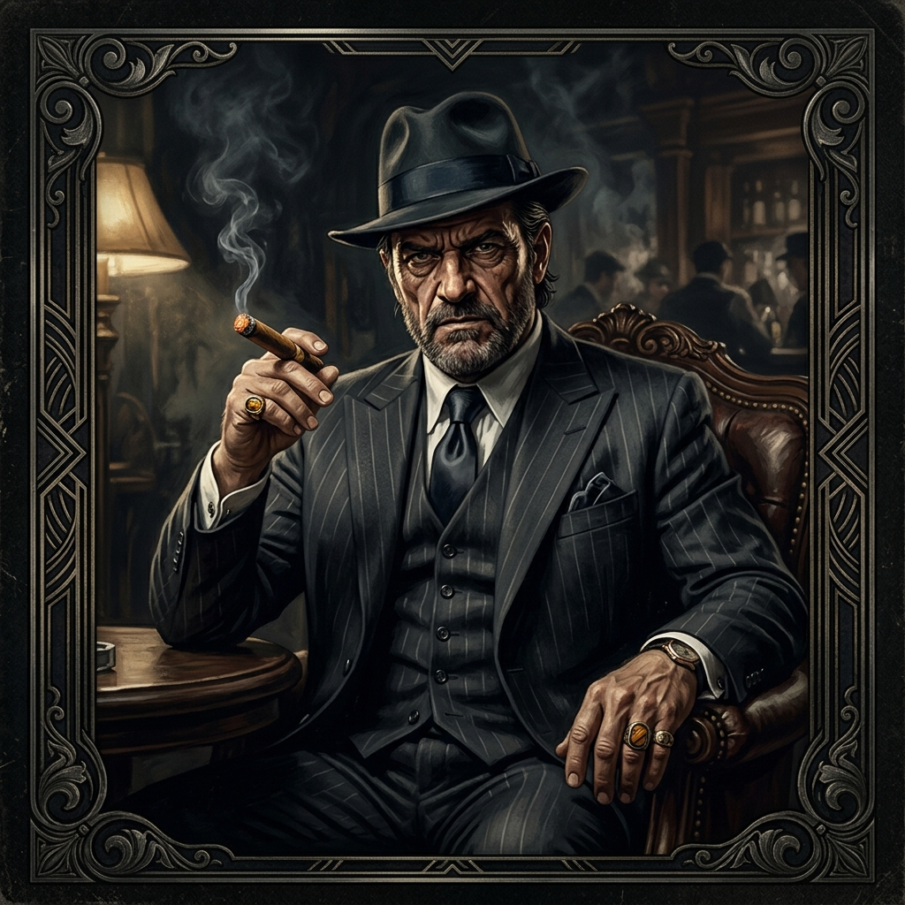
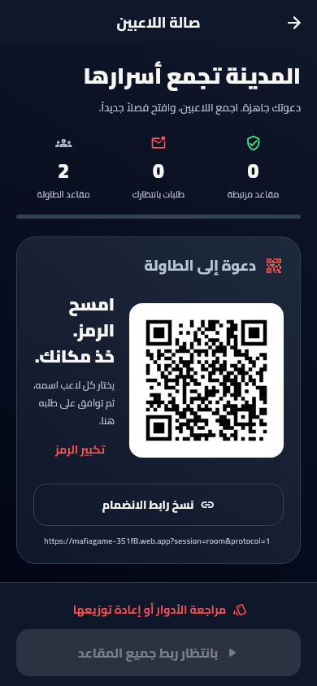
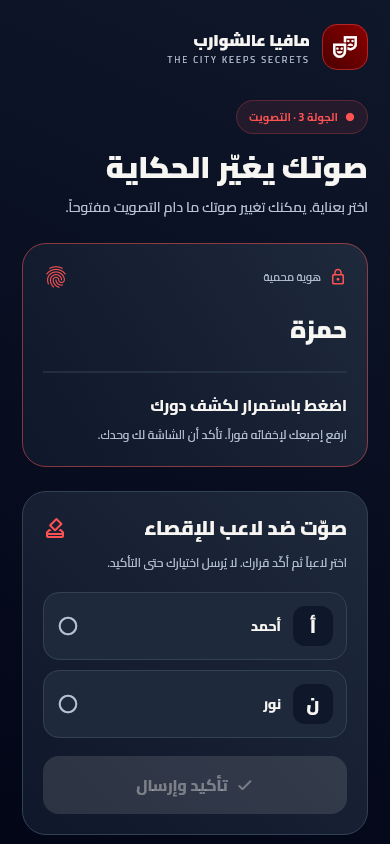

كلاسيكي.
كل الأسرار بإيدك.
جهاز واحد مع الحكم. كشف سري للأدوار، إدارة الليل والنقاش والتصويت، وحسم القدرات خطوة بخطوة.
- مؤقت نقاش مع إيقاف واستئناف وتمديد
- دفاع وتصويت وإقصاء بإدارة الحكم
- إدارة الجولات محلياً؛ المزامنة تحتاج الإنترنت
السهرة إلها وجه ثاني
نظرة بريئة. حجة مقنعة. وشارب يخفي ألف سر.
اجمع الشلة على لعبة مافيا بطابع عربي، وخلي التطبيق يمسك خيوط المدينة.
٠١ / الطاولة جاهزة
أنت الحكم. وزّع الأدوار، اضبط القوانين، وخلّي كل جولة تحكي قصة جديدة.
جهاز واحد مع الحكم. كشف سري للأدوار، إدارة الليل والنقاش والتصويت، وحسم القدرات خطوة بخطوة.
الحكم يفتح صالة الانتظار. اللاعب يمسح QR أو يفتح الرابط، يختار مقعده، وبعد موافقة الحكم تبدأ الحكاية.
أضف الأسماء واختر الأدوار.
خصّص القدرات وشروط الفوز.
ليل، نقاش، تصويت… وكشف.
٠٢ / ما حدا مثل ما بتفكر
ثلاثة أطراف، وأسرار ما بتنباع.
اختَر شخصية وتعرّف على دورها.

فريق المافيا
الهدوء أحياناً أخطر اعتراف.
يقود المؤامرة مع فريق المافيا. يمكن تفعيل تمويه هويته أمام التحقيق من إعدادات القواعد.


٠٣ / امسك خيوط الحكاية
مؤقت للنقاش، أدوار ليلية مرتبة، وتصويت ودفاع واضحين للحكم.
تسلسل أحداث المباراة مع تمييز ضحايا المافيا والقناص، وملخص للنتيجة.
نتائج وإحصائيات اللاعبين وسجل مباريات. احذف تفاصيل مباراة وتبقى الإحصائيات الإجمالية.
ارجع من تطبيق آخر وكمل جلستك؛ واستعد المباراة إذا خرجت بالغلط. الإنهاء اليدوي ينهيها.
٠٤ / ذوقك يغيّر الأجواء
الأحمر الدموي هو هوية اللعبة الأصلية والمجانية. وللي يحب يغيّر الجو، ثلاث توليفات حصرية تجمع لونين بشخصية مختلفة.
الثيمات من إعدادات التطبيق. التفعيل الحصري يتطلب صلاحية Premium. الشراء داخل التطبيق لم يُفعّل بعد.
الليلة الثالثة
خذ نفساً… وراقب الوجوه.
معاينة توضيحية للألوان، بأسماء ومشهد تجريبيين.
مساعد صوتي للجولات ضمن ميزات Premium القادمة. يظهر حالياً في إعدادات القواعد كمعاينة، ولا ينفّذ وظائف صوتية بعد.
٠٥ / قبل ما تبدأ السهرة
لا. في اللعب الكلاسيكي يكفي تطبيق الحكم. وفي اللعب التفاعلي يفتح اللاعب رابط الدعوة أو يمسح QR من هاتفه وينضم من المتصفح، بدون تنزيل التطبيق أو إنشاء حساب خاص به.
إدارة الجولات الكلاسيكية تعمل محلياً. تسجيل الدخول وحفظ النتائج ومزامنة الحساب تحتاج اتصالاً. اللعب عبر QR يحتاج الإنترنت على جهاز الحكم وأجهزة اللاعبين.
نزّل الملف من الزر أدناه، ثم افتحه على هاتف Android. اسمح بالتثبيت من المتصفح أو تطبيق الملفات عندما يطلب الهاتف ذلك. النسخة الحالية لأجهزة ARM64، وتتطلب Android 7.0 أو أحدث. ملفها موقّع بشهادة الاختبار الحالية للتطبيق.
اطلب رابط الدعوة من الحكم أو امسح QR المعروض عنده. اختر اسمك أو مقعدك وانتظر موافقته. الموقع التعريفي لا ينشئ جلسة بدلاً من تطبيق الحكم.
اللعب الأساسي والثيم الأحمر الأصلي متاحان مجاناً. الثيمات الثلاثة الأخرى تتطلب صلاحية Premium، والشراء داخل التطبيق لم يُفعّل بعد. المساعد الصوتي ميزة مخطط لها وغير متاحة للاستخدام حالياً.
نعم، من إعدادات القواعد مع شرح لكل خيار: القدرات وحدود الحماية والإسكات والتحقيق وشروط الفوز وغيرها. القناص قدرة إضافية تُوزّع على أحد المواطنين، برصاصة واحدة للمباراة مع إمكانية تأجيلها.
الليلة تبدأ من هون
نزّل تطبيق الحكم، جهّز القهوة… وخلي الشك علينا.